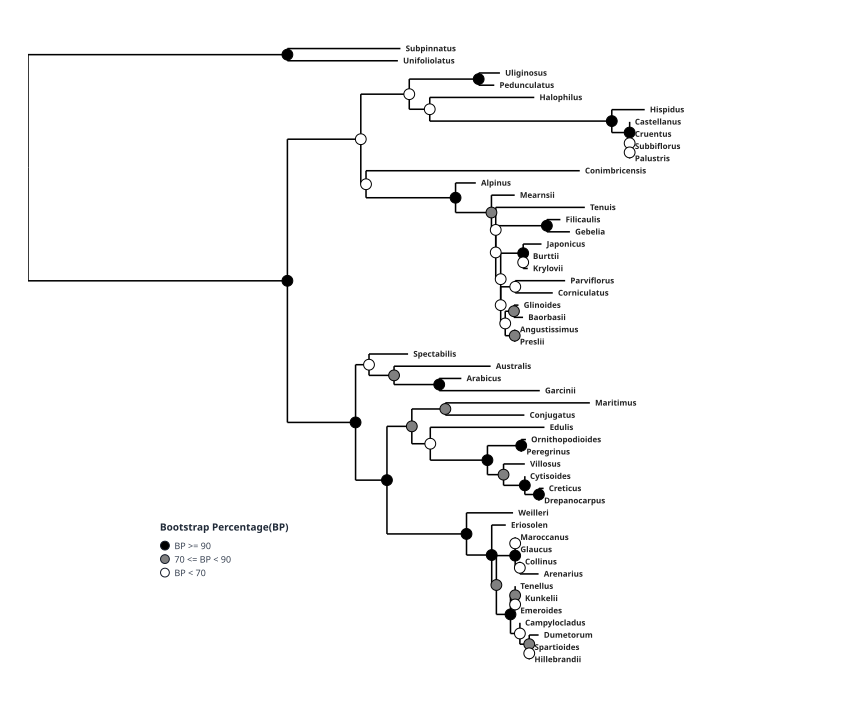
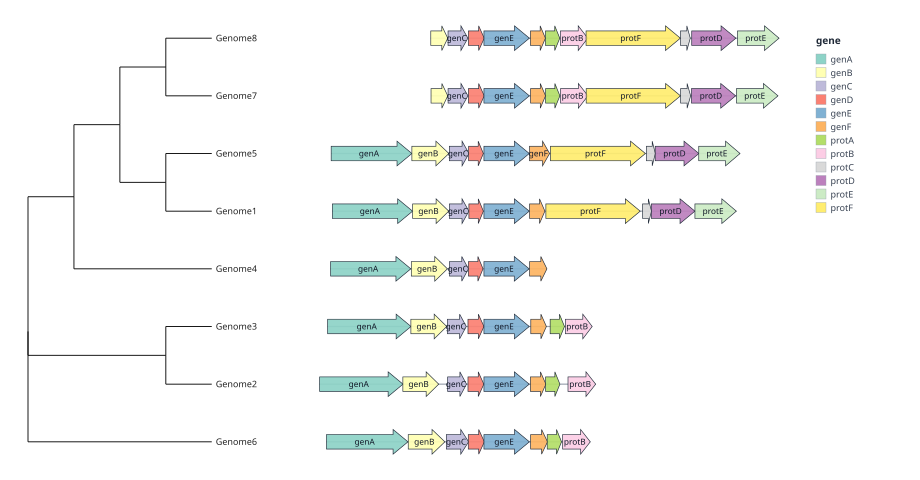

13. Gallery of Reproducible Examples
Reproducing the four published case studies from Chapter 13 of Data Integration, Manipulation and Visualization of Phylogenetic Trees plus a phylogeographic circular-map showcase in ggtree-py—spanning HPV58 sequence distances, discrete bootstrap symbols, groupOTU circular clade highlights, BioNJ genome locus structures, and an inward circular SARS-CoV-2 phylogeny wrapped around a NearsidePerspective map of Europe.
13.1 Visualizing Pairwise Nucleotide Sequence Distance with Phylogenetic Tree
Pairs the HPV58 complete-genome phylogeny with nested monophyletic/paraphyletic clade annotations (geom_cladelab and geom_strip), internal support markers, and an adjacent Sequence Distance facet panel plotting pairwise Hamming differences (%) via geom_point() and geom_path().

▶ Show / Hide Python Code read_treeread_fastagroupCladegeom_cladelab
import numpy as np
from ggtree import (
read_tree, read_fasta, system_file, groupClade, rootnode, rotate,
DataFrame, ggtree, aes, geom_tiplab, geom_treescale, scale_color_manual,
scale_shape_manual, theme_tree2, geom_cladelab, geom_strip, geom_nodelab,
geom_facet, geom_point, geom_path, facet_widths, hexpand,
)
tree = read_tree(system_file("extdata", "TDbook", "tree_HPV58.nwk"))
aln = read_fasta(system_file("extdata", "TDbook", "dna_HPV58_aln.fas"))
clade = {"A3": 92, "A1": 94, "A2": 108, "B1": 156, "B2": 159, "C": 163, "D1": 173, "D2": 176}
tree = groupClade(tree, clade)
cols = {
"A1": "#EC762F", "A2": "#CA6629", "A3": "#894418", "B1": "#0923FA",
"B2": "#020D87", "C": "#000000", "D1": "#9ACD32", "D2": "#08630A",
}
p = (
rotate(ggtree(tree, aes(color="group"), ladderize=False), rootnode(tree))
+ geom_tiplab(aes(label="paste0(\"italic('\", label, \"')\")"), parse=True, size=1.6)
+ geom_treescale(x=0, y=1, width=0.002)
+ scale_color_manual(
values=cols,
na_value="black",
name="Lineage",
breaks=["A1", "A2", "A3", "B1", "B2", "C", "D1", "D2"],
)
+ hexpand(0.42)
+ theme_tree2(legend_position=(0.05, 0.90))
)
dat1 = DataFrame({
"node": [94, 108, 131, 156, 159, 173, 176],
"name": ["A1", "A2", "A3", "B1", "B2", "D1", "D2"],
"offset": [0.0038] * 7,
"offset_text": [-0.0004] * 7,
"extend": [(0, 0.5), 0.5, (0.5, 0), (0, 0.5), (0.5, 0), (0, 0.5), (0.5, 0)],
})
dat2 = DataFrame({
"node": [92, 172],
"name": ["A", "D"],
"offset": [0.0052, 0.0052],
"offset_text": [0.00025, 0.00025],
"extend": [0, 0],
})
dat3 = DataFrame({
"node": [163],
"name": ["C"],
"offset": [0.0051],
"offset_text": [0.00025],
"extend": [0],
})
p = (
p
+ geom_cladelab(
data=dat1,
mapping=aes(node="node", label="name", color="group", offset="offset", offset_text="offset_text", extend="extend"),
barsize=1.2, fontface=3, align=True, fontsize=2.6,
)
+ geom_cladelab(
data=dat2,
mapping=aes(node="node", label="name", offset="offset", offset_text="offset_text", extend="extend"),
barcolor="darkgrey", textcolor="darkgrey", barsize=2.0, fontsize=3.4, fontface=3, align=True,
)
+ geom_cladelab(
data=dat3,
mapping=aes(node="node", label="name", offset="offset", offset_text="offset_text", extend="extend"),
barcolor="darkgrey", textcolor="darkgrey", barsize=3.2, fontsize=3.4, fontface=3, align=True,
)
+ geom_strip(65, 71, "italic(B)", color="darkgrey", offset=0.0052, align=True, offset_text=0.00025, barsize=2.0, fontsize=3.4, parse=True)
+ geom_nodelab(aes(subset="node == 92", label="'*'"), color="black", nudge_x=-0.001, nudge_y=1, size=2.8)
+ geom_nodelab(aes(subset="node == 155", label="'*'"), color="black", nudge_x=-0.0003, nudge_y=-1, size=2.8)
+ geom_nodelab(aes(subset="node == 158", label="'95/92/1.00'"), color="black", nudge_x=-0.0001, nudge_y=-1, hjust=1, size=2.1)
+ geom_nodelab(aes(subset="node == 162", label="'98/97/1.00'"), color="black", nudge_x=-0.0001, nudge_y=-1, hjust=1, size=2.1)
+ geom_nodelab(aes(subset="node == 172", label="'*'"), color="black", nudge_x=-0.0003, nudge_y=-1, size=2.8)
)
tips_df = p.data[p.data["isTip"]]
tips_recs = sorted(tips_df.to_records(), key=lambda r: float(r["y"]))
tips_ordered = [str(r["label"]) for r in tips_recs]
group_map = {str(r["label"]): r.get("group") for r in tips_recs}
seq_bytes = [np.frombuffer(aln[lbl.split("|")[-1]].encode("ascii"), dtype=np.uint8) for lbl in tips_ordered]
seq_mat = np.vstack(seq_bytes)
seq_len = float(seq_mat.shape[1])
seq1_col, seq2_col, dist_col, clade_col = [], [], [], []
for j, s2 in enumerate(tips_ordered):
pct = (seq_mat != seq_mat[j : j + 1]).sum(axis=1) / seq_len * 100.0
g2 = group_map.get(s2)
for s1, dv in zip(tips_ordered, pct):
seq1_col.append(s1)
seq2_col.append(s2)
dist_col.append(float(dv))
clade_col.append(g2)
td = DataFrame({"seq1": seq1_col, "seq2": seq2_col, "dist": dist_col, "clade": clade_col})
p2 = (
p
+ geom_facet(panel="Sequence Distance", data=td, geom=geom_point, alpha=0.6, size=0.9, mapping=aes(x="dist", color="clade", shape="clade"))
+ geom_facet(panel="Sequence Distance", data=td, geom=geom_path, alpha=0.55, size=0.6, mapping=aes(x="dist", group="seq2", color="clade"))
+ scale_shape_manual(values=[1, 2, 3, 4, 5, 6, 7, 8], guide=False)
)
facet_widths(p2, widths=[1.15, 1.0])
13.2 Displaying Different Symbolic Points for Bootstrap Values
Parses text_RMI_tree via read_newick(..., node_label='support'), right-ladderizes the tree, bins internal support values with cut(support, c(0, 700, 900, 1000)), and encodes bootstrap intervals as white, grey, and black shape=21 circles with an inset legend.

▶ Show / Hide Python Code read_newickcutgeom_point2scale_fill_manual
from ggtree import (
read_newick, system_file, rootnode, ggtree, aes, geom_tiplab,
geom_point2, xlim, theme_tree, scale_fill_manual,
)
tree = read_newick(system_file("extdata", "TDbook", "text_RMI_tree.nwk"), node_label="support")
root = rootnode(tree)
p = (
ggtree(tree, color="black", size=1.1, linetype=1, right=True)
+ geom_tiplab(size=2.6, hjust=-0.06, fontface="bold")
+ xlim(0, 0.09)
+ geom_point2(
aes(subset="!isTip & node != root", fill="cut(support, c(0, 700, 900, 1000))"),
shape=21,
size=3.0,
)
+ theme_tree(legend_position=(0.18, 0.20))
+ scale_fill_manual(
values={"(900,1e+03]": "black", "(700,900]": "grey", "(0,700]": "white"},
guide="legend",
name="Bootstrap Percentage(BP)",
breaks=["(900,1e+03]", "(700,900]", "(0,700]"],
labels=["BP >= 90", "70 <= BP < 90", "BP < 70"],
)
)
p
13.3 Highlighting Different Groups
Partitions avian (^ch) vs non-chicken lineages using groupOTU(), applies node rotations and swaps (flip()/rotate()), overlays four radial geom_hilight() sectors extending to radius 1.4, and adds bootstrap > 50 labels alongside curved subgroup geom_cladelab() annotations.

▶ Show / Hide Python Code groupOTUfliprotategeom_hilight
from ggtree import (
read_tree, system_file, groupOTU, DataFrame, ggtree, aes,
scale_color_manual, geom_nodepoint, geom_tiplab, flip, rotate,
geom_hilight, geom_cladelab, geom_nodelab, theme,
)
mytree = read_tree(system_file("extdata", "TDbook", "tree_treenwk_30.4.19.nwk"))
cls = [t for t in mytree.tip_label if t.startswith("ch")]
labeltree = groupOTU(mytree, cls)
p = (
ggtree(labeltree, aes(color="group", linetype="group"), layout="circular")
+ scale_color_manual(values=["#efad29", "#63bbd4"])
+ geom_nodepoint(color="black", size=0.1)
+ geom_tiplab(size=2.0, color="black")
)
p2 = (
p
+ flip(136, 110)
+ flip(141, 145)
+ rotate(141)
+ rotate(142)
+ rotate(160)
+ rotate(164)
+ rotate(131)
)
dat = DataFrame({
"node": [110, 88, 156, 136],
"fill": ["#229f8a", "#229f8a", "#229f8a", "#f9311f"],
})
p3 = p2 + geom_hilight(data=dat, mapping=aes(node="node", fill="I(fill)"), alpha=0.2, extendto=1.4)
p4 = p3 + geom_cladelab(
node=113,
label="Avian-specific expansion",
align=True,
angle=-35,
offset_text=0.05,
hjust="center",
fontsize=2.2,
offset=0.2,
barsize=0.2,
)
p5 = p4 + geom_nodelab(
mapping=aes(x="branch", label="label", subset="!is.na(as.numeric(label)) & as.numeric(label) > 50"),
size=2.0,
color="black",
nudge_y=0.6,
)
sub_df = DataFrame({"node": [114, 121], "name": ["Subgroup A", "Subgroup B"]})
p6 = (
p5
+ geom_cladelab(
data=sub_df,
mapping=aes(node="node", label="name"),
align=True,
offset=0.05,
offset_text=0.03,
hjust="center",
barsize=0.2,
fontsize=2.2,
angle="auto",
horizontal=False,
)
+ theme(legend_position="none")
)
p6
13.4 Phylogenetic Tree with Genome Locus Structure
Reconstructs a bionj() tree from pairwise Jaccard gene-content distances across example_genes and pairs it cleanly via geom_facet(..., geom=geom_motif, on='genE', label='gene', align='left') with Brewer Set3 fills.

▶ Show / Hide Python Code bionjread_tablegeom_facetgeom_motif
from ggtree import (
read_table, system_file, bionj, ggtree, aes, geom_tiplab, xlim_tree,
geom_facet, geom_motif, scale_fill_brewer, theme, element_blank, facet_widths,
)
example_genes = read_table(system_file("extdata", "TDbook", "example_genes.tsv"), header=True, sep="\t")
genomes = []
for g_name in example_genes["molecule"].tolist():
if g_name not in genomes:
genomes.append(g_name)
gene_sets = {
g_name: set(example_genes[example_genes["molecule"] == g_name]["gene"].tolist())
for g_name in genomes
}
n = len(genomes)
d = [[0.0] * n for _ in range(n)]
for i in range(n):
for j in range(i):
gi, gj = gene_sets[genomes[i]], gene_sets[genomes[j]]
jacc = len(gi & gj) / max(len(gi | gj), 1)
d[i][j] = d[j][i] = 1.0 - jacc
tree = bionj(d, labels=genomes)
p = (
ggtree(tree, branch_length="none")
+ geom_tiplab(size=3.0)
+ xlim_tree(5.5)
+ geom_facet(
mapping=aes(xmin="start", xmax="end", fill="gene"),
data=example_genes,
geom=geom_motif,
panel="Alignment",
on="genE",
label="gene",
align="left",
)
+ scale_fill_brewer(palette="Set3", name="gene")
+ theme(strip_text=element_blank())
)
facet_widths(p, widths=[1, 2])
13.5 Inward Circular Phylogeny Wrapped Around a Geographic Map
Re-implements Figure 1 of Potter et al. (2026, baltic; SARS-CoV-2 lineage B.1.620 data from Dudas et al., 2021, CC-BY) purely in ggtree-py: combines ggtree(..., layout='inward_circular', open_angle=21.0, xlim=51.92) and rotate_tree(..., 102.3) with compound NearsidePerspective Europe map polygons (geom_polygon with subgroup holes), 20 concentric dotted mutation rings, 77 shouldered tip-to-map geom_path() connectors, size-tiered sampling locations, and white-haloed country legends.

▶ Show / Hide Python Code ggtreerotate_treegeom_polygongeom_path
import csv
import json
import math
from ggtree import (
DataFrame, aes, geom_path, geom_point, geom_polygon, geom_segment,
geom_text, geom_tippoint, ggtree, margin, read_tree, reorder_phylo,
rotate_tree, scale_color_manual, scale_fill_manual,
scale_size_continuous, system_file, theme, theme_void,
)
palette = {
"Lithuania": "#e1c72f", "Czech Republic": "#74c476", "Germany": "#31a354",
"Switzerland": "#386cb0", "France": "#016450", "Italy": "#93c2e6",
"Sweden": "#5a5a5a", "Portugal": "#5a5a5a",
"Central African Republic": "#e34a33", "Equatorial Guinea": "#fc8d59",
"Gabon": "#fc8d59", "South Korea": "#d2b9a2", "USA": "#8856a7", "Canada": "#8b7c94",
}
tree = reorder_phylo(read_tree(system_file("extdata", "baltic_fig1", "B.1.620.nwk")), "cladewise")
with open(system_file("extdata", "baltic_fig1", "europe_globe.json"), encoding="utf-8") as fh:
globe = json.load(fh)
cal, gc = globe["calibration"], globe["globe_circle"]
t_root_x, r0_ax, inward_lim = -float(cal["max_tip_height"]), float(cal["r0_ax"]), float(cal["inward_lim"])
dr_mut, rot, deg_per_y = float(cal["dr_per_mut"]), float(cal["rotate_angle_deg"]), float(cal["deg_per_y"])
def to_polar(ax_x, ax_y):
r_ax = math.hypot(ax_x, ax_y)
theta_ccw = (math.degrees(math.atan2(ax_y, ax_x)) - rot) % 360.0 + rot
return t_root_x + inward_lim * (1.0 - r_ax / r0_ax), 1.0 + (theta_ccw - rot) / deg_per_y
def cw_polar(mut, ang_cw):
r_ax = r0_ax - mut * dr_mut
rad = math.radians(ang_cw)
return to_polar(r_ax * math.sin(rad), r_ax * math.cos(rad))
tip_rows, conn_rows = [], []
with open(system_file("extdata", "baltic_fig1", "tip_metadata.tsv"), encoding="utf-8", newline="") as fh:
for r in csv.DictReader(fh, delimiter="\t"):
tip_rows.append({"label": r["label"], "country": r["country"]})
if int(r["has_connector"]) == 1:
gid = f"conn_{r['cw_index']}"
for px, py in (
(float(r["ax_x"]), float(r["ax_y"])),
(float(r["shoulder_ax_x"]), float(r["shoulder_ax_y"])),
(float(r["map_ax_x"]), float(r["map_ax_y"])),
):
xg, yg = to_polar(px, py)
conn_rows.append({"x": xg, "y": yg, "group": gid, "country": r["country"]})
cx, cy, gr = float(gc["cx"]), float(gc["cy"]), float(gc["r"])
ocean_df = DataFrame([
dict(zip(("x", "y"), to_polar(cx + gr * math.cos(2 * math.pi * i / 240), cy + gr * math.sin(2 * math.pi * i / 240))), group="ocean", subgroup="ocean_0")
for i in range(240)
])
rim_df = DataFrame([
dict(zip(("x", "y"), to_polar(cx + gr * math.cos(2 * math.pi * (i % 240) / 240), cy + gr * math.sin(2 * math.pi * (i % 240) / 240))), group="rim")
for i in range(241)
])
def poly_df(groups, prefix):
out = []
for gi, subs in enumerate(groups):
for si, pts in enumerate(subs):
for ax_x, ax_y in pts:
xg, yg = to_polar(ax_x, ax_y)
out.append({"x": xg, "y": yg, "group": f"{prefix}_{gi}", "subgroup": f"{prefix}_{gi}_{si}"})
return DataFrame(out)
land_df = poly_df(globe["land"], "land")
lakes_df = poly_df(globe["lakes"], "lake")
borders_df = DataFrame([
dict(zip(("x", "y"), to_polar(ax_x, ax_y)), group=f"b_{bi}")
for bi, pts in enumerate(globe["borders"]) for ax_x, ax_y in pts
])
major_rows, minor_rows = [], []
for m in range(20):
dst = major_rows if m % 5 == 0 else minor_rows
for i in range(141):
xg, yg = cw_polar(float(m), 352.8 * i / 140)
dst.append({"x": xg, "y": yg, "group": f"r_{m}"})
x0, y0 = cw_polar(0.0, 0.0)
x1, y1 = cw_polar(19.0, 0.0)
bar_df = DataFrame([{"x": x0, "y": y0, "xend": x1, "yend": y1}])
tick_ang = 360.0 - math.degrees(0.0042 * math.pi)
tick_rows, txt_rows = [], []
for m in (0, 5, 10, 15):
tx0, ty0 = cw_polar(float(m), tick_ang)
tx1, ty1 = cw_polar(float(m), 0.0)
tick_rows.append({"x": tx0, "y": ty0, "xend": tx1, "yend": ty1})
nx, ny = to_polar(-0.052, r0_ax - m * dr_mut)
txt_rows.append({"x": nx, "y": ny, "label": str(m), "angle": 0.0, "hjust": 1.0, "vjust": 0.5, "fontsize_px": 21.0})
mx, my = to_polar(0.020, r0_ax - 10.0 * dr_mut)
txt_rows.append({"x": mx, "y": my, "label": "mutations", "angle": 90.0, "hjust": 0.5, "vjust": 1.0, "fontsize_px": 23.0})
loc_df = DataFrame([
dict(zip(("x", "y"), to_polar(float(loc["ax_x"]), float(loc["ax_y"]))), country=loc["country"], pt_size=math.sqrt(float(loc["size_tier"])))
for loc in globe["locations"]
])
leg_rows = []
for u, v0, step, hj, names in (
(0.0, 0.01, 0.026, 0.0, ["Lithuania", "Czech Republic", "Germany", "France", "Italy", "Switzerland"]),
(0.99, 0.99, -0.026, 1.0, ["Sweden", "Portugal"]),
(0.0, 0.99, -0.026, 0.0, ["Central African Republic", "Equatorial Guinea", "Gabon", "South Korea", "USA", "Canada"]),
):
for idx, name in enumerate(names):
xg, yg = to_polar(-3.18 + u * 6.36, -3.18 + (v0 + idx * step) * 6.36)
leg_rows.append({"x": xg, "y": yg, "label": name, "country": name, "hjust": hj, "vjust": 0.5, "angle": 0.0, "fontsize_px": 27.5})
p = rotate_tree(
ggtree(
tree, layout="inward_circular", open_angle=float(cal["open_angle_deg"]),
xlim=inward_lim, ladderize=False, color="#000000", size=1.95,
lineend="round", linejoin="round",
),
rot,
)
p.attrs["polar_r_factor"] = 0.489
p = (
(p % DataFrame(tip_rows))
+ geom_polygon(aes(x="x", y="y", group="group", subgroup="subgroup"), data=ocean_df, inherit_aes=False, fill="#f5f5f5", color="none", alpha=1.0, zorder=-6)
+ geom_polygon(aes(x="x", y="y", group="group", subgroup="subgroup"), data=land_df, inherit_aes=False, fill="#c2c4bd", color="#ffffff", size=0.35, alpha=1.0, zorder=-5)
+ geom_polygon(aes(x="x", y="y", group="group", subgroup="subgroup"), data=lakes_df, inherit_aes=False, fill="#f5f5f5", color="none", alpha=1.0, zorder=-4)
+ geom_path(aes(x="x", y="y", group="group"), data=borders_df, inherit_aes=False, color="#ffffff", size=0.65, lineend="round", linejoin="round", zorder=-3)
+ geom_path(aes(x="x", y="y", group="group"), data=rim_df, inherit_aes=False, color="#000000", size=0.58, zorder=-2)
+ geom_path(aes(x="x", y="y", group="group"), data=DataFrame(minor_rows), inherit_aes=False, color="#adadad", size=0.55, linetype="dotted", dasharray="0.9,1.5", lineend="round", zorder=-1)
+ geom_path(aes(x="x", y="y", group="group"), data=DataFrame(major_rows), inherit_aes=False, color="#000000", size=0.60, linetype="dotted", dasharray="0.9,1.5", lineend="round", zorder=-1)
+ geom_segment(aes(x="x", y="y", xend="xend", yend="yend"), data=bar_df, inherit_aes=False, color="#000000", size=1.45, lineend="square", zorder=2)
+ geom_segment(aes(x="x", y="y", xend="xend", yend="yend"), data=DataFrame(tick_rows), inherit_aes=False, color="#000000", size=1.45, lineend="square", zorder=2)
+ geom_text(aes(x="x", y="y", label="label", hjust="hjust", vjust="vjust", angle="angle"), data=DataFrame(txt_rows), inherit_aes=False, color="#000000", bg_colour="#ffffff", bg_r=2.8, zorder=15)
+ geom_path(aes(x="x", y="y", group="group", color="country"), data=DataFrame(conn_rows), inherit_aes=False, size=1.30, lineend="round", linejoin="round", zorder=10)
+ geom_tippoint(aes(fill="country"), shape=21, color="#000000", size=3.7, stroke=1.15, zorder=12)
+ geom_point(aes(x="x", y="y", fill="country", size="pt_size"), data=loc_df, inherit_aes=False, shape=21, color="#000000", stroke=0.90, zorder=14)
+ geom_text(aes(x="x", y="y", label="label", hjust="hjust", vjust="vjust", angle="angle", color="country"), data=DataFrame(leg_rows), inherit_aes=False, bg_colour="#ffffff", bg_r=2.8, zorder=16)
+ scale_fill_manual(values=palette)
+ scale_color_manual(values=palette)
+ scale_size_continuous(range=(2.4, 4.05))
+ theme_void()
+ theme(legend_position="none", plot_margin=margin(8, 8, 8, 8))
)
p